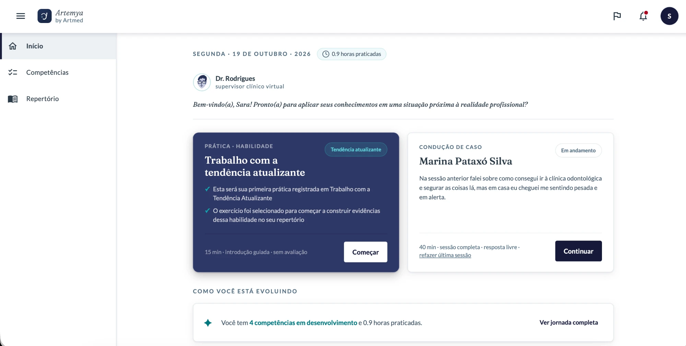
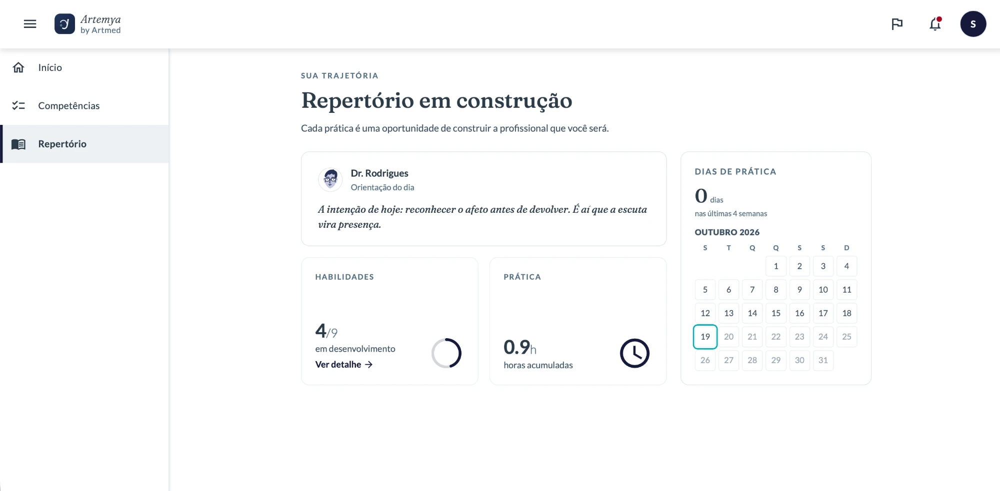
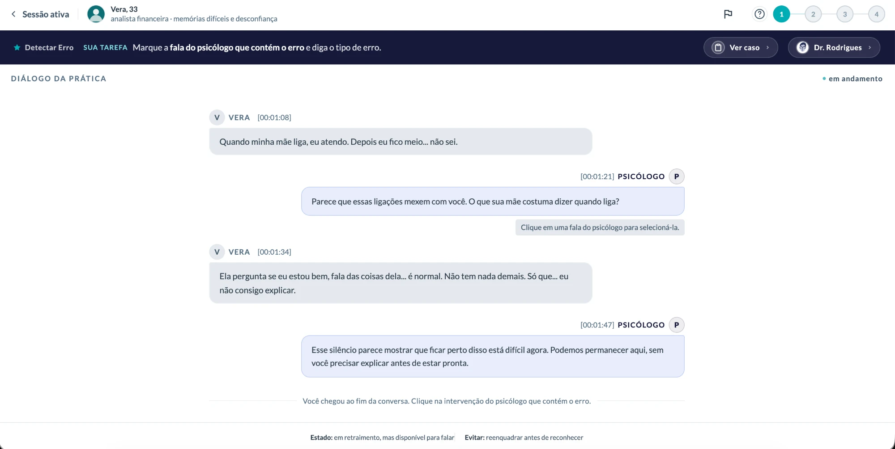
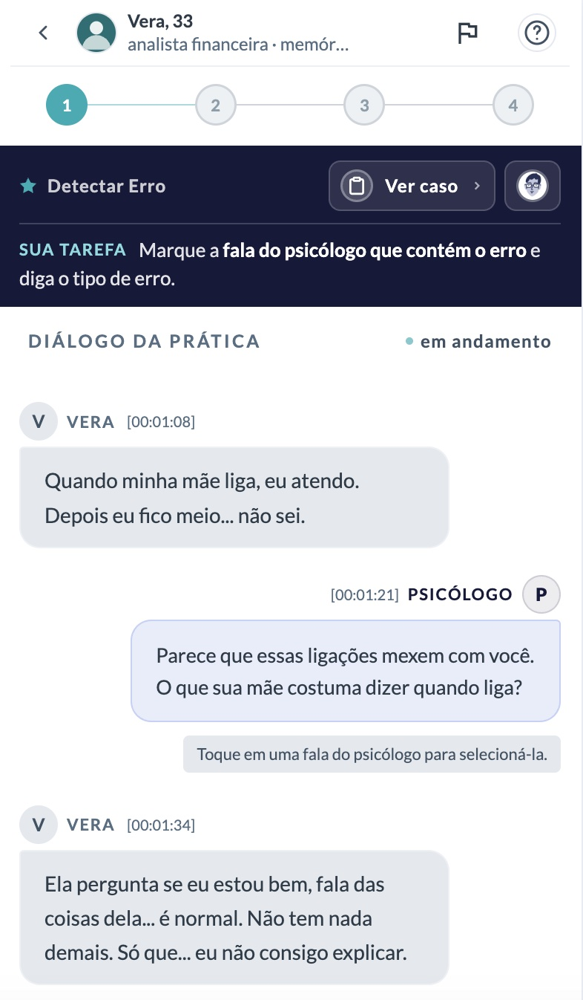
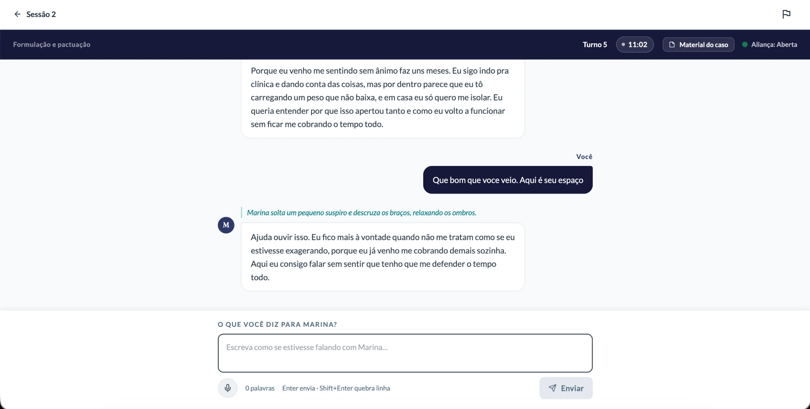
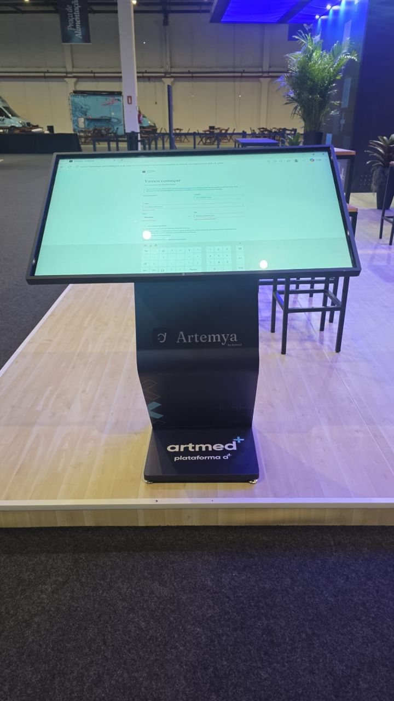
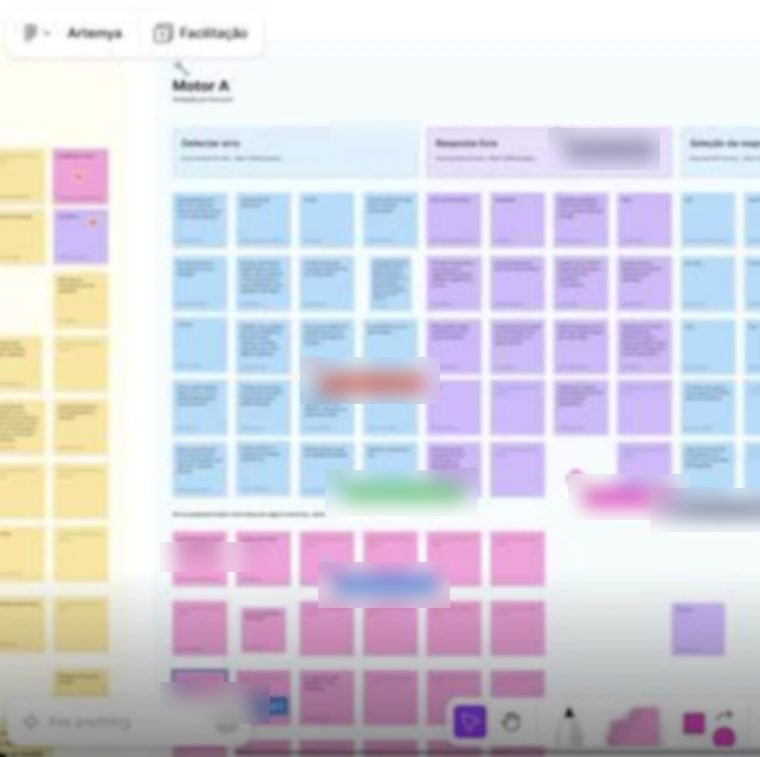

Nobody read the prompt
Students skipped the instructions, and even when they read them, they didn't understand what to do.
From an off-target first version to a pilot in two institutions, in six weeks.

TL;DR
Artemya lets psychology students practice clinical care with an AI virtual patient. I started from a long product definition document and a first version built by an AI vendor that fell far short of what the CEO expected, in experience and in look. The product had no identity. In six weeks I took it to a pilot in two institutions: I led the discovery and the MVP cut, created the identity and the interface, ran the team's rituals, and used AI from day one to understand the product and prototype it.
Research shaped the core decision. Tests showed nobody read the prompt, and the obvious fix was to explain every step. I kept the friction of reading the case, because reading is the clinical skill the exercise trains, and removed only the friction that taught nothing. On my own initiative I also reviewed accessibility before the pilot and found about 10 barriers nobody had mapped.
6 weeks
from a product definition to the pilot
~10
accessibility barriers removed before the pilot
394 / 2
unique users / institutions in the pilot, per Clarity
The product in motion
A loop through the live product: onboarding, sign-in and a practice session with a virtual patient. It runs in Portuguese, the product's language.
Open full screen

Context
Artemya lets psychology students practice patient care with an AI-driven virtual patient before treating real patients. The whole promise depends on one thing: whether the student can run the practice alone. If they get stuck early, or the simulation feels artificial, the value falls apart.
Conflict
The starting point was a long product definition and a first version from the AI vendor that fell short of the CEO's expectations, in experience and in look. There was no identity, no agreed MVP, and six weeks to the pilot. It was easy to assume students would find their way: the team knew the product inside out. But "it's clear" is usually obvious only to whoever built it.
Goal
Turn the definition into a product students could use alone, with its own identity and an AI conversation credible enough to sustain the practice, and get it to the pilot in six weeks with no critical barrier reaching the student.
The team: me leading design, alongside another designer, two product people, a psychologist and a partner AI company. I led the project from day one.
I used AI from the first day, as a design tool and not as a shortcut.
To understand
To organize the product definition and map the flows, the mechanics of the practice and its limits before drawing any screen.
To prototype
I prototyped in Claude Design, with complete, descriptive prompts that I built in Claude Code from the documentation. Each screen came from the product rules, not from a vague request.
To test the patient
The virtual patient is AI too, so I tested its conversations repeatedly and organized the findings by type of behavior, to fix with product and the psychologist what broke the practice.
Method
Key findings
Students skipped the instructions, and even when they read them, they didn't understand what to do.
Interactive elements read as static, so students didn't know where to act.
Repetitive responses, gender and context inconsistencies, and feedback that talked about the student instead of to them.
Around 10: focus, keyboard navigation, contrast, and elements invisible to assistive technology.
Before
Guidance sat far from the task.
After
It appears at the moment and place the student needs to act.

Before
Pieces of information competed visually.
After
It's clear what is primary, secondary and actionable.
Before
Clickable elements read as static.
After
State and contrast signal that they are actionable.

Before
Repetitive responses and inconsistencies broke the immersion.
After
Adjusted with Product and the Psychology specialist, then validated by repeating the tests.

Before
No structured accessibility review in the QA sign-off process.
After
Fixes documented directly in the handoff specs, so the correction didn't depend on someone remembering it.
Option A
Spell everything out and hand-hold every step until nobody could get it wrong. It would have looked like good UX. It fell because reading and interpreting the case is the clinical skill the student is there to practice: solving it in the design would remove the point of the exercise.
Option B
Three lighter options I weighed before bringing a proposal to the team: an optional hint on demand, a worked example, and a short guide up front. The hint only arrives after the student is already stuck. The worked example hands over the clinical reading and becomes an answer key. The guide up front is forgotten by the time it's needed.
What I chose
I kept the structure of the prompt and split the friction into two kinds: what was the exercise (reading, interpreting, deciding what to do) and what was just in the way (instructions far from the action, controls that didn't look clickable, an extra step that confused more than it taught). I removed the second kind and kept the first.
In its place, layered instruction next to the task: a strip with the task and a "see full case" link. It lowers the friction without taking the reasoning away from the student.
What I gave up
I gave up spelling out every rule at the entry. My argument was clinical and pedagogical: the guide speaks little and never interrupts, and the goal is to train reading, not obedience to instructions. There was no pushback from the team. The cost was a risk I chose to accept: a harder first attempt.
Risk
Some students could keep getting stuck on the part I kept. The signals I planned to watch: use of the optional guide, time spent on the first screen, and what volunteers say in interviews. To read them, a post-it exercise on a shared board and open interviews, with questions that don't lead.
Evidence
The same theme came back in a second usability round, with different students: nobody read the prompt, and what was clickable didn't look clickable.
Improved
The product reached the pilot in six weeks, with its own identity and a flow that changed after testing. The AI's credibility issues were adjusted and validated, and around 10 accessibility barriers were fixed through the handoff specs.
Got worse
At first access, 13 of 21 students described the experience as easy. Four pointed to a lack of initial guidance, which is the cost of not spelling everything out at the entry. The "Fragile" label, meant for the learning trajectory, leaked into the feedback on each answer and was read as a verdict. That weighs on how the stages should be named.
Left out of the pilot
Testing surfaced ideas beyond the brief, like letting students hear the patients' lines spoken aloud. That stayed out of the pilot due to implementation constraints.
Beyond the pilot

What I'd do differently
I'd test with a few students before locking the pattern across every exercise, including the names of the stages. I'd align early with the clinical lead on what depends on them, like when the guide triggers. And I'd write the decision down in a decision log, with the trade-off, while it was happening.
After the pilot, I planned and ran a feedback round with about twenty students at one of the two institutions: sticky notes on a shared board, one column per exercise type, with questions that didn't lead the answer. It's an early read, not proof, but it showed where the design needs to go next.
What the round showed
Getting started wasn't the problem. Most of the criticism was about how answers are evaluated and about feedback that doesn't point to a next step. Students accept making mistakes; what they miss is knowing how to get it right. That moves the next design problem from the entry flow to the feedback itself.
"There's no problem in making mistakes, but the means to learn are missing." A student, in the feedback round.

Next design questions
+A Educação, 2026. Some numbers and internal details have been generalized for external use.
Next case

The research showed where the new experience still broke in real use, and changed the product's priority.
View case study